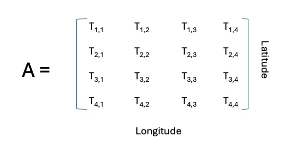
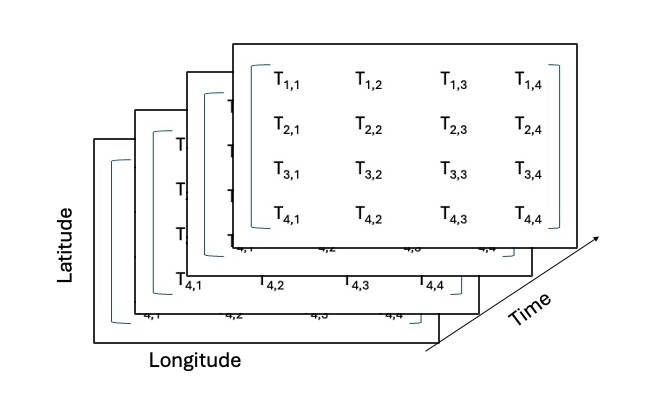
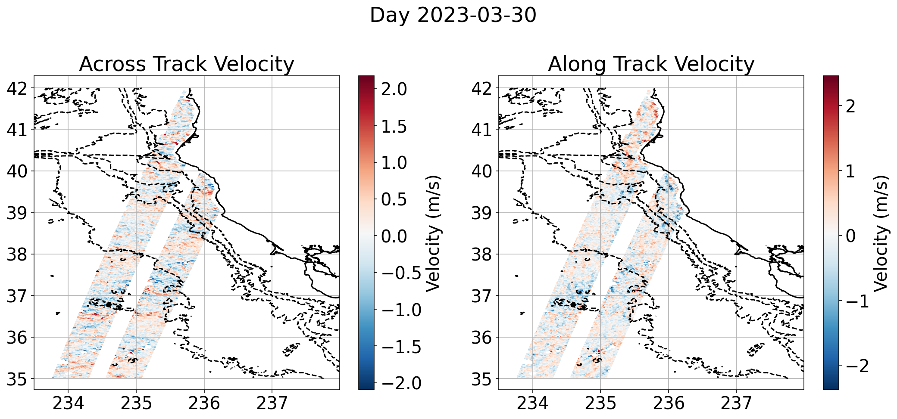
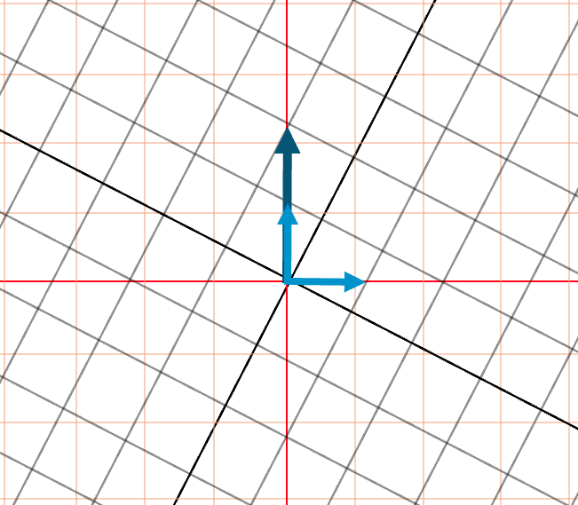

Linear Algebra 1
Instructor: Tommy Stone, Applied Ocean Science (AOS) PhD student (thstone@ucsd.edu)
TAs: Sam Schulz (s1schulz@ucsd.edu), Camilla Marcellini (cmarcellini@ucsd.edu )
Linear algebra is a branch of mathematics that studies vectors, vector spaces, linear transformations, and systems of linear equations. At its core, it provides a framework for understanding and working with quantities that have both magnitude and direction, as well as the relationships between them. The subject focuses on operations with matrices and vectors, making it a powerful language for expressing and solving mathematical problems.
Lecture notes adapted from
David Vishny 2022 lecture notes for the SIO Math Workshop
Essence of Linear Algebra By 3Blue1Brown
Linear Algebra and Its Applications by Gilbert Strang, 4th Edition
Mathematical Methods for Physics and Engineering By K.R Riely, M.P Hobson, S. J. Bence
1 | Why Linear Algebra?
The first question we must ask is why is Linear Algebra important in Earth Sciences?
1.1 Application of Linear Algebra
Linear Algebra is essential because it provides the mathematical foundation for analysis of large datasets, solving a system of equations as well as identifying patterns in complex systems. Earth Science disciplines use Linear Algebra with General Circulation Models (CGM), Wave Dynamics, Eigenvalues, Singular Value Decomposition (SVD), Least Squares Fitting, Neural Networks and many more. In order to go into these advanced topics we need to first to learrn the basis of Linear Algebra which are vectors and matrices.
2 | Review - Scalars, Vectors, Matrices, Tensors and Dimensions (Oh my!)
In this first section we will review our definitions of
Scalars
Vectors
Matrices
Tensors
2.1 Notation
Typical notation you will find for scalars, vectors and matrices
Scalars are indicated by lower case letters.
Vectors will have an arrow above a lower case letter
Another way to represent a vector is by multiplying the scalar values of \(u_x,u_y,u_z\) by their basis vectors \(\hat{i}, \hat{j}, \hat{k}\)
Matrices are indicated by capital letters and/or also indicated in bold
2.2 Scalars
A scalar is a quantity that can be fully described by a number. Examples of scalars are
Temperature (T)
Salinity (S)
Mass (m)
2.3 Vectors
A vector is an object that has both a magnitude (length) and a direction. The components (or elements) of a vector are scalars.
Where \(v_x, v_y\) and \(v_z\) are scalar components of the vector \(\vec{v}\). Examples of vectors are
Force
Acceleration
Momentum
[1]:
import numpy as np
import matplotlib.pyplot as plt
# Define the vector
vector = np.array([2, 3])
# Create the plot
plt.figure(figsize=(5, 5))
plt.quiver(0, 0, vector[0], vector[1], angles='xy', scale_units='xy', scale=1, color='b')
plt.xlim(-3, 3)
plt.ylim(-4, 4)
plt.grid()
plt.axhline(0, color='black',linewidth=0.5)
plt.axvline(0, color='black',linewidth=0.5)
plt.title("Vector Representation")
plt.xlabel("X-axis")
plt.ylabel("Y-axis")
plt.show()
We also know that we can add vectors
and we can also multiply vectors by a constant, or scale the vector
2.4 Linear Combinations and Spans
A linear combination of two vectors is defined as
Where a and b are scalar values. We call the span of a set of vectors to be a linear combination of those two vectors given an adjustable parameter which are the scalars. The below plot shows an example of the span of vectors \(\vec{u}\) and \(\vec{v}\). The span is of all 2D space indicated by the red dots (imagine these as the end points of vectors)
[2]:
# Define two vectors
vector_u = np.array([1, 2])
vector_v = np.array([2, 1])
# Create a grid of scalar values for the linear combination
scalars = np.linspace(-2, 2, 10)
# Create the plot
plt.figure(figsize=(6, 6))
plt.axhline(0, color='black', linewidth=0.5)
plt.axvline(0, color='black', linewidth=0.5)
plt.grid()
# Plot the span of the vectors
for a in scalars:
for b in scalars:
linear_combination = a * vector_u + b * vector_v
plt.plot(linear_combination[0], linear_combination[1], 'ro', markersize=2)
# Plot the original vectors
plt.quiver(0, 0, vector_u[0], vector_u[1], angles='xy', scale_units='xy', scale=1, color='b', label='Vector u')
plt.quiver(0, 0, vector_v[0], vector_v[1], angles='xy', scale_units='xy', scale=1, color='g', label='Vector v')
plt.xlim(-5, 5)
plt.ylim(-5, 5)
plt.title("Span of Two Linearly Independent Vectors")
plt.xlabel("X-axis")
plt.ylabel("Y-axis")
plt.legend()
plt.show()
Not all vectors will span 2D space. If both vectors are zero vectors then they will remain at the origin
Or, if two vectors are parallel, then the span will only be on the line of the two vectors (as shown below).
[3]:
# Define two linearly dependent vectors
vector_u = np.array([1, 2])
vector_v = 2 * vector_u # Scalar multiple of vector_u
# Create a grid of scalar values for the linear combination
scalars = np.linspace(-2, 2, 10)
# Create the plot
plt.figure(figsize=(6, 6))
plt.axhline(0, color='black', linewidth=0.5)
plt.axvline(0, color='black', linewidth=0.5)
plt.grid()
# Plot the span of the vectors
for a in scalars:
for b in scalars:
linear_combination = a * vector_u + b * vector_v
plt.plot(linear_combination[0], linear_combination[1], 'ro', markersize=2)
# Plot the original vectors
plt.quiver(0, 0, vector_u[0], vector_u[1], angles='xy', scale_units='xy', scale=1, color='b', label='Vector u')
plt.quiver(0, 0, vector_v[0], vector_v[1], angles='xy', scale_units='xy', scale=1, color='g', label='Vector v')
plt.xlim(-5, 5)
plt.ylim(-5, 5)
plt.title("Span of Linearly Dependent Vectors in 2D")
plt.xlabel("X-axis")
plt.ylabel("Y-axis")
plt.legend()
plt.show()
Review
If you have a set of vectors which does not add dimensionality to the span (i.e. the vectors are parallel in 2D) then it is said that these vectors are linearly dependent. For all other vectors they will be linearly independent. You will see the topic of linear dependence/independence come up when describing a matrix. This description of span and linear dependence/independence also applies to 3D and higher dimensions.
2.5 Matrices
A matrix is a rectangular array of scalar values arranged in rows and columns
Where \(i\) is the row index and \(j\) is the column index for each element in the matrix. A matrix will have two dimensions listed as MxN. M is the number of rows and N is the number of columns. This will be important when we go into the algebra side. An example of a matrix will be a list or temperature values described by their latitude and longitude position
Questions
Q1: From the above example, what are the dimensions of the 2D matrix (i.e. What is the value for M and N)?
Solution: 4 x 4. Note: A matrix does not have to be a square, it can also be a MxN matrix where M > N or N < M
There are many ways that we can view matrices. We can see them as a method to solve a system of equations
Viewing these as a system of equations with a unique solution, we can transform this into vectors and a matrix
We will go more into this form of solving systems of equations but also how matrices can be used to transform vectors into another space.
2.6 Tensors
Scalars, Vectors and Matrices are all different order Tensors. Tensors are described by their order where the order is the description on the number of the dimensions of the object
Scalars are 0th order tensor (a single number)
Vectors are 1st order tensors (a list of numbers [x y z])
Matrices are 2nd order tensors ([M] rows and [N] columns)
There are also 3rd order tensors. An example of this is a tensor with dimensions Latitude x Longitude x Time.
There can also be higher order tensors but for our purposes we will only be using 2nd order tensors (a matrix).
Note: The definition of the word tensor is a bit confusing because it depends on the field you are in to determine it’s definition.
3 | The Algebra in Linear Algebra
In order to move forward we must now go over how matrices are added, multiplied which will then move us towards performing linear operations to solve system of equations
3.1 | Vector and Matrix Addition
Vectors have dimensions, if we are referring to a 3D coordinate system for each component we would expect a vector to have three components
By counting the number of rows and columns we can obtain the dimensions for the vector. In the above example we have a 3x1 (3 rows, 1 column). All vectors will be some number by 1. Vectors typically are in the form Nx1 but, we can transpose the vector to give it dimensions of 1xN
Transposing is the process of changing the columns to rows. This becomes important when we start using multiplication or addition to make sure the dimensions match. To sum two vectors we add each component
A matrix can be seen as a set of vectors.
Given that a matrix can be seen as a set of vectors, we can then also add the matrix in a similar method. If we have two matrices, A and B, then we can add the matrices by adding each component if their dimensions are the same (i.e. \(M_A == M_B, N_A == N_B\))
From the above it is clear that, since \(a_{1,1} + b_{1,1} = b_{1,1} + a_{1,1}\) then addition in linear algebra is commutative
There are several other properties for matrices which I will list down in the cheat sheet below. One item to note is that, unlike scalars, the order in which multiplication occurs is important for matrices but does not matter for scalar values (matrices are not associative). In other words
If \(AB = BA\) then we say that A and B commute. The dimensions of the vector and matrix also matter when adding or multiplying.
3.2 | The Dot Product
As shown in the vector calculus class, the dot product (also called the inner product) takes two vectors of the same length and combines them into a single scalar number. The dot product is indicate by a dot between two vectors $ \vec{u} \cdot `:nbsphinx-math:vec{v}`$. Below shows the operation of the dot product
A question that might come up is why did we take the transpose of \(\vec{u}\)? When performing vector, matrix multiplication we are transforming the objects and the output will have a new dimension. If we have a vector, \(\vec{u}\), which is an Nx1, and a vector, \vec{v}, which is a Nx1, we can determine what the dimensions are of the new product
The number of columns of the vector on the left vector must equal the number of rows on the right vector. The new object (maybe a scalar, maybe a vector, maybe a matrix) will have the dimensions as the number of rows from the left vector and the number of columns on the right vector.
\(\vec{u}\) is a Nx1 and \(\vec{v}\) is a Nx1. Multiplying the vectors gives us
This is not possible because \(1 \ne N_v\). However, if we take the transpose of \(\vec{u}\), this changes the dimensions
Because \(N_u = N_v\) we can multiply each component to get a scalar value. The new dimensions of the resultant object are a 1x1 tensor or a scalar!
Question
What is the dot product of the following vectors?
Solution
3.3 | Matrix Vector Multiplication
Previously we had mentioned that linear algebra allows us to solve a system of equations. We had previously listed the following two equations
Let’s ignore now what the two equations equal
If we now factor out x from the first column vector, and y from the second column vector our system of equations looks like the following
This is exactly how matrix vector multiplication works, given a matrix \(\mathbf{A}\) and a vector \(\vec{x}\), we can take the components of \(\vec{x}\) and multiply each column.
Note that this also works because of the dimensions, \(\mathbf{A}\) is a 2x2 matrix and \(\vec{x}\) is a 2x1
Question
In the algebra class we worked on water mixing (you will also encounter this in SIOC 210). Let’s say that we have two water masses, AntArctic Bottom Water (AABW) and the North Atlantic Deep Water (NADW). Both water masses have mixed due to turbulence but we have readings of their measurements before mixing. The temperature and salinity for the AABW are \(T_{AABW} = 2 ^\circ C, S_{AABW} = 35 \text{ psu}\). The temperature and salinity for the NADW are \(T_{NADW} = 5^\circ C, S_{NADW} = 34 \text{ psu}\). We know that the new water mass has is 60% AABW and 40% NADW. Assuming that mixing follows a linear relationship, what is the temparture and salinity of the mixed water mass?
Solution
We can treat this as a system of equations. We know that we must sum the temperature values and multiply by their ratio in order to determine the new temperature value. We will also do the same for the salinity values. Setting up the system of equations we have
What I listed above was redundant, but I just wanted to emphasize how matrix vector multiplication relates to solving a system of equations. A geographic way to think about this is if there was a linear relationship between salinity and temperature, we could
3.4 | Matrix Matrix Multiplication
Matrix matrix multiplication is fundamental in solving linear algebra equations. If we have two matrices, \(\mathbf{A}\) and \(\mathbf{B}\), we can multiply to obtain a new matrix \(\mathbf{C}\).
Dimensions
If \(\mathbf{A}\) is an \(M \times N\) matrix and \(\mathbf{B}\) is an \(N \times P\) matrix, then the resulting matrix \(\mathbf{C}\) will have dimensions \(M \times P\).
Multiplying two matrices
If we now think of this as a vector matrix multiplication then we are simply multiplying the matrix A times the column vectors of B
Taking matrix \(\mathbf{A}\) and multiplying by the first column vector of \(\mathbf{B}\)
Notice that this long operation only gave us the first column of \(\mathbf{C}\). We now need to take matrix \(\mathbf{A}\) and multiply by the second column of \(\mathbf{B}\) to then obtain the second column of \(\mathbf{C}\) and so on
After all that arithmetic we finally have each of the column vectors for \(\mathbf{C}\)
Question
Let \(\mathbf{A}\) be a \(2 \times 3\) matrix and \(\mathbf{B}\) be a \(3 \times 2\) matrix:
If we multiply \(\mathbf{A}\) \(\mathbf{B}\), what are the dimensions of \(\mathbf{C}\) ?
Solution
Question Try to determine the values for matrix \(\mathbf{C}\)
As mentioned previously, matrix matrix multiplication is not commutative, meaning \(\mathbf{A} \mathbf{B} \neq \mathbf{B} \mathbf{A}\) in general. However, it is associative, so \((\mathbf{A} \mathbf{B}) \mathbf{C} = \mathbf{A} (\mathbf{B} \mathbf{C})\).
3.5 | Solving a System of Equations
In section 3.3 we discussed matrix vector multiplication by showing an example of mixed water masses. We knew in advanced what the ratio of each water mass was which allowed us to use matrix-vector multiplication determine the properties of the mixed water mass. What if we didn’t know what the ratios were, but we knew what the temperature and salinity were? In other words
Where A is a matrix of our coefficients for temperature (T) and salinity (S)
\(\vec{x}\) is our ratio of unknowns
and \(\vec{b}\) is the temperature and salinity for the mixed water maxx
If we knew the components of A and \(\vec{B}\), how could we solve for \(\vec{x}\) ?
3.5.1 | The Visual Solution
We have a linear system of equations, in a 2D plane what we are geographically trying to solve is the point where the two lines intersect. Let’s say we have the below system of equations
The below plot shows that graphically the solution is the intersection of both lines. We could trace this and count the points to the solution but this becomes difficult in three dimensions or when dealing with more than 2 equations.
[4]:
# Define the x values
x = np.linspace(-10, 10, 100)
# Define the y values for the equations
y1 = 2 * x
y2 = 0.5 * (x + 3)
# Solving the system of equations
A = np.array([[2, -1], [-1, 2]])
b = np.array([0, 3])
solution = np.linalg.solve(A, b)
print(solution)
# Create the plot
plt.figure(figsize=(8, 6))
plt.plot(x, y1, label='2x - y = 0', color='blue')
plt.plot(x, y2, label='-x + 2y = 3', color='green')
plt.plot(solution[0], solution[1], 'ro', label='Intersection Point')
plt.axhline(0, color='black', linewidth=0.5)
plt.axvline(0, color='black', linewidth=0.5)
plt.grid()
plt.title("Line Plot for 2x - y = 0 and -x + 2y = 3")
plt.xlabel("X-axis")
plt.ylabel("Y-axis")
plt.legend()
plt.show()
[1. 2.]
3.5.2 | Row Reduction (Gaussian Elimination)
Row reduction is a method for solving systems of equations by transforming the augmented matrix of the system into a simpler form (usually called a row echelon or reduced row echelon form). The idea is to use elementary row operations that don’t change the solution by
Swapping rows
Multiplying a row by a nonzero constant (scaling an equation)
Add or subtract a multiple of one row from another
From our example
If we divide the first row by \(\frac{1}{2}\) which is only scaling our first equation and not changing it’s properties
We can now add row 1 and row 2 together to create a new output for row 2
With this new equation we can solve for \(y\)
Now, substituting \(y = 2\) into our first equation
Our solution is
3.5 | The Determinant and Inverse Matrix
We’ve gone over matrix addition, subtraction and multiplication. When solving algebraic problems we often see them in the form of
In the above equation we can divide by 2 in order to get the value of x. In linear algebra our most basic equation is of the form
We want to establish a method so that we can perform a type of “division” of matrix A, which will then become a one on the left-hand side of the equation and then that value can be used, with some operation, to solve the equation. This method is known as the inverse of A, represented by \(A^{-1}\). If we can determine the inverse then
Where \(I\) is known as the identity matrix. Any vector or matrix multiplied by the identity matrix equals itself
The identity matrix is all zeros except across the diagonal, which is a value of ones
To determine the inverse matrix of A we must first find the determinant.
If the determinant is equal to 0 then the matrix is said to be singular and we cannot find the inverse of the matrix using this method (don’t worry, there are other methods such as Gauss-Jorden or using Matrix minors, cofactors etc. etc.). Next, after finding the determinant we then switch the order of matrix A by switching positions of the components in position a and d, then also switching the positions of the components b and c and making them negative
Now, we divide by the determinant and this becomes the inverse matrix
Question
Find the inverse of matrix A and use it to solve for vector \(\vec{x}\).
Show that \(A^{-1}\) is the inverse of A by computing \(A A^{-1} = I\)
Solution (1)
Compute the determinant:
Since the determinant is non-zero, the matrix is invertible.
Compute the inverse:
Multiplying \(A^{-1}\) by \(\vec{b}\)
Solution (2)
Note: You do not have to do these by hand! Matlab and Python have methods to find the inverse of a determinant as well as a matrix
Python
import numpy as np
A = np.array([[2,-1], [-1,2]])
# find determinant
d = np.linalg.det(A)
# find inverse
A_inv = np.linalg.inv(A)
Matlab
A = [2 -1;-1 2];
d = det(A);
A_inv = inv(A);
[9]:
import numpy as np
# Example matrix
A = np.array([[2, -1], [-1, 2]])
# Calculate determinant
# Calculate determinant
determinant = np.linalg.det(A)
A_inv = np.linalg.inv(A)
print("Determinant: {:.2f}".format(determinant))
print("Inverse Matrix:")
print(A_inv)
print("Product of A and its Inverse:")
print(A @ A_inv)
Determinant: 3.00
Inverse Matrix:
[[0.66666667 0.33333333]
[0.33333333 0.66666667]]
Product of A and its Inverse:
[[1. 0.]
[0. 1.]]
4 | Linear Transformations
The inverse of a matrix may seem like a random operation, however, there is intuition behind what we are doing. In order to understand this we must first understand linear transformations. Linear transformations are a special kind of function between vector spaces that preserve the basic operations of vector addition and scalar multiplication. The below picture shows an image of data taken from the Surface Water Ocean and Topography (SWOT) satellite mission for the Cal/Val orbit. By applying the equation for geostrophic velocities we can determine the horizontal and vertical velocities from Sea Surface Height (SSH). There is one issue, by taking the horizontal and vertical gradeient we are actually calculating the along track and across track gradient, not the zonal (East to West) and meridional (North to South) gradient.
In order to perform this we must transform the velocities from across track and along track to zonal and meridional. First, let’s demonstrate exactly what we are trying to do with this transformation. We have a vector with elements \(\vec{x'} = \begin{bmatrix} 0 \\ 2 \end{bmatrix}\). Looking at this in component form we have
We see that our coordinate system is facing the along track direction (approximately 45 \(^\circ\)) from the meridional line. We want to rotate the vector so that it’s magnitude does not change, only it’s direction, which requires a mapping (aka linear transformation) onto a new coordinate system. The black/gray lines are our old coordinate system and the red/orange lines are the new coordinate system.
We can see that the new basis vectors, \(\hat{i} \text{ and } \hat{j}\) have new coordinates
If we now take our vector, \(\vec{x}'\), and replace the old basis vectors \(\hat{i}', \hat{j}'\) with the new basis vectors we can see where the coordinates lands.
We can generalize this from the basis vectors to apply and linear transformation
Where this is our new transformation matrix
Question
If we wanted to rotate our coordinate system counter-clockwise by 90 degrees, what would be the transformation matrix?
Solution
Question
If we want to rotate by any angle in the counter-clockwise direction, how could we generalize this matrix?
Solution